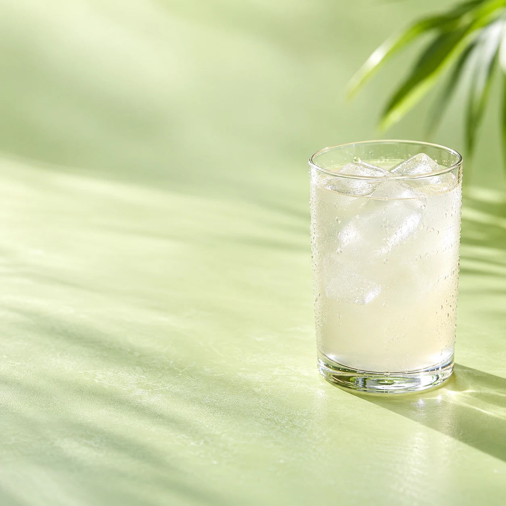
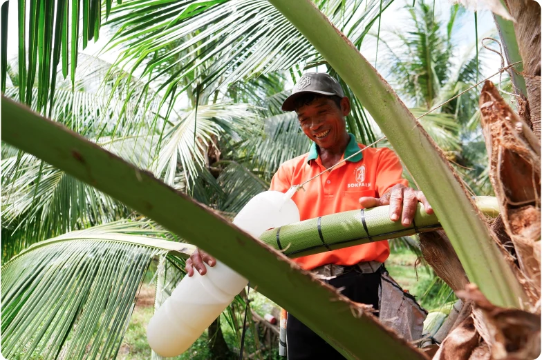
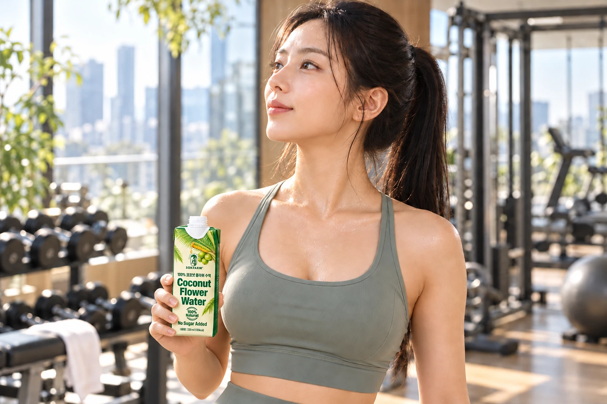
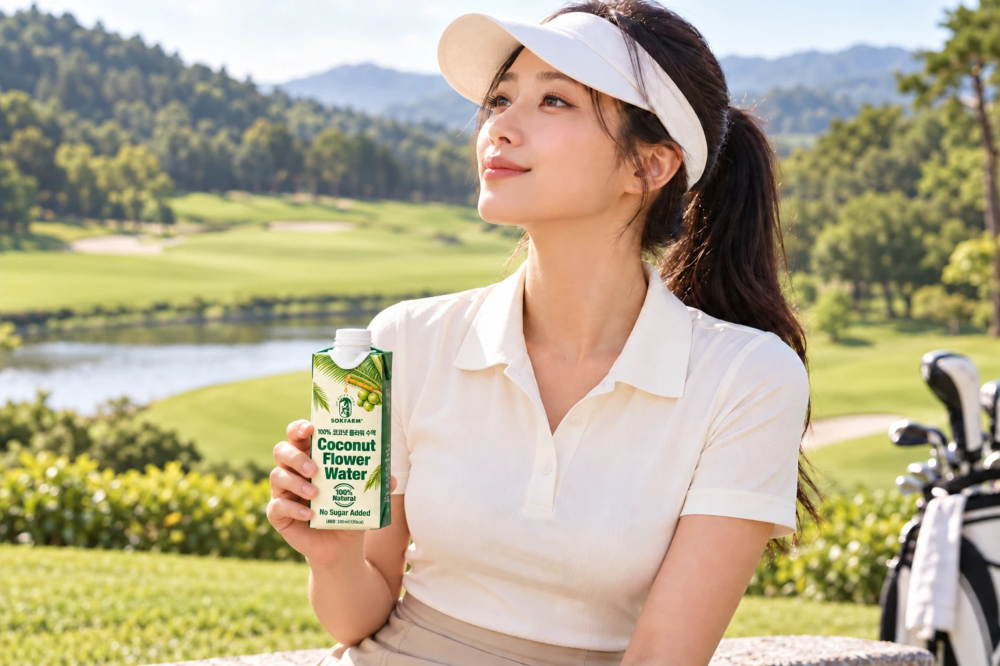
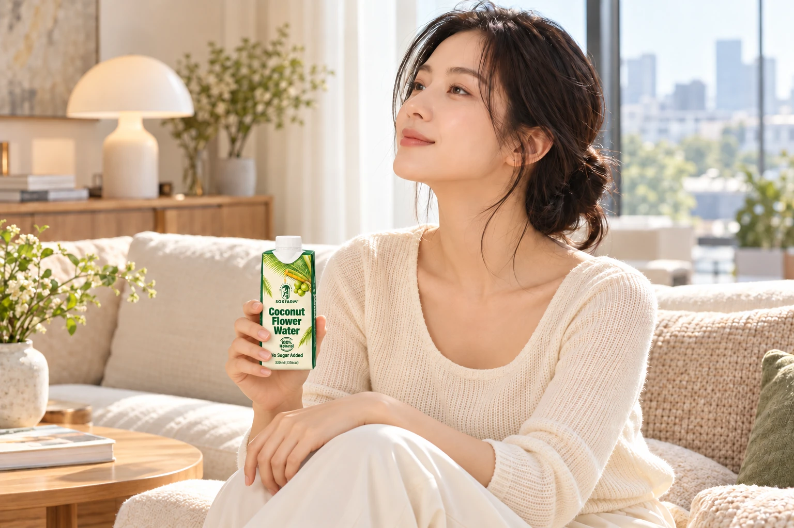

한 가지 원료, 꽃 수액 100%
음료의 원료는 코코넛 꽃 수액입니다.
익숙한 코코넛 워터와는 다른 출발점입니다.
SOKFARM × THE COCO
코코넛 꽃 수액 음료 COCONUT FLOWER WATER · 330ml
설탕을 더하지 않은,
꽃 수액 그대로의 단맛.

THE COCO / 01From the flower.WHAT MAKES IT DIFFERENT
코코넛 워터가 열매 속 물이라면,
이 음료는 꽃에서 한 방울씩 채취한 수액입니다.
꽃 수액에 원래 담긴 단맛을 만나보세요.

음료의 원료는 코코넛 꽃 수액입니다.
익숙한 코코넛 워터와는 다른 출발점입니다.
달콤함은 꽃 수액 자체에서 옵니다.
설탕 추가 없음은 당류 0을 뜻하지 않습니다.
UHT 처리 후 무균 충전한 한 팩.
차갑게 그대로, 또는 커피와 함께 즐겨보세요.
ONE FLOWER. ONE DAILY RITUAL.
COCONUT FLOWER WATER
열매 속 물이 아닌 꽃에서 채취한 수액.
설탕을 더하지 않은 자연스러운 단맛을
차갑게 한 팩, 매일의 한 잔으로 만나보세요.
꽃 수액에 자연 유래 당류가 있습니다.
설탕 추가 없음은 당류 0을 뜻하지 않습니다.
THE COCO / EVERYDAY MOMENTS
운동을 마친 뒤에도, 집에서 쉬는 순간에도.
각자의 일상에 코코넛 꽃의 맛을 더해보세요.

운동 가방에 챙긴 한 팩, 잠시 쉬어가는 시간.

라운드 사이, 가볍게 챙겨 온 330ml의 여유.

차갑게 준비한 꽃 수액, 집에서 누리는 작은 여유.
새로운 일상에 차분히 머무르는 한때.
AI로 제작한 일상 연출 이미지입니다.
DAILY RECIPES / COCONUT FLOWER WATER
코코넛 플라워 워터에 취향을 더해보세요.
함께 즐길 수 있는 간단한 음료 레시피입니다.
싱그러운 케일과 바나나의 부드러운 조합.
모든 재료를 믹서에 넣고 부드럽게 갈아주세요.
자연스러운 단맛에 더하는 커피의 깊은 향.
얼음을 채운 잔에 워터를 붓고, 커피를 천천히 더해주세요.
꽃 수액 본연의 맛을 가장 간단하게.
얼음을 가득 채운 잔에 워터를 그대로 부어주세요.
천천히 음미하는 또 다른 부드러운 풍미.
워터를 컵에 옮겨 따뜻하게 데워주세요. 취향에 맞는 온도로 즐깁니다.
재료와 양은 제공된 레시피 포스터를 기준으로 안내합니다.
레시피에 사용한 음료 보기 ↗KNOW BEFORE YOU CHOOSE
원료와 형태, 영양과 보관까지.
제품을 고를 때 필요한 정보를 안내합니다.
열매 속 물이 아닌 꽃에서 채취한 수액입니다. 꽃 수액 자체에 담긴 자연스러운 단맛을 한 팩의 음료로 즐깁니다.
음료의 원료 보기음료의 단맛은 꽃 수액 자체에서 옵니다. 설탕을 추가하지 않았어도 자연 유래 당류가 있으므로, 섭취량과 영양표시를 함께 확인하세요.
영양 정보 안내330ml UHT 팩은 잘 흔들어 차갑게 즐겨보세요. 제조사는 개봉 후 냉장 보관하고 당일 마시도록 안내합니다. 국내 제품 라벨도 확인하세요.
보관 가이드A LITTLE MORE TO KNOW
제품을 이해하는 데 필요한
자주 묻는 질문입니다.
코코넛 워터는 열매 속 물이고, 속팜 수액 음료는 코코넛 꽃에서 채취한 수액을 담은 음료입니다. 원료의 출발점이 서로 다릅니다.
음료는 꽃 수액 100%로, 꽃 수액에 원래 들어 있는 당류가 단맛을 냅니다. ‘설탕 추가 없음’은 ‘당류 0’이나 ‘제로 칼로리’를 뜻하지 않습니다. 국내 판매 제품의 영양표시와 섭취량을 확인하세요.
제조사는 330ml UHT 사각팩을 잘 흔들어 차갑게 즐기고, 개봉 후에는 냉장 보관해 당일 마시도록 안내합니다. 국내 판매 제품에 표시된 보관법과 소비기한을 우선 확인하세요.
더코코 공식 스토어를 준비하고 있습니다. 오픈 후 홈페이지의 공식 스토어 버튼으로 이동해 판매 구성과 가격을 확인하고 구매할 수 있습니다.
프리미엄 카페, 호텔 다이닝, 식품 리테일을 위한 유통·납품 상담을 준비하고 있습니다. 음료의 활용 용도와 공급 수량에 맞춰 상담할 수 있도록 공식 채널을 안내할 예정입니다.
KNOW YOUR INGREDIENT
코코넛 꽃을 돌보고, 한 방울씩 수액을 모으는 손길.
베트남 크메르 공동체의 전통에서 시작한 속팜은
지역 농가와 함께 꽃 수액의 쓰임을 넓혀갑니다.
정성스럽게 모은 꽃 수액을 330ml 한 팩에.
더코코는 코코넛 꽃의 자연스러운 단맛을
한국의 일상 속 한 잔으로 소개합니다.
베트남 현지 회사의 이야기를 더 만나보세요.
FOR PROFESSIONALS
카페의 새로운 한 잔부터 호텔과 리테일의 음료 제안까지.
330ml 사각팩의 다양한 쓰임을 만나보세요.
꽃 수액 아이스 커피와 과일 음료.
매일의 메뉴에 제안하는 새로운 한 잔.
객실과 라운지에서 가볍게 즐기는 한 팩.
여유로운 시간을 함께하는 음료 제안.
집에서도, 필드에서도, 운동을 마친 뒤에도.
일상의 순간에 맞춰 소개하는 330ml 음료.